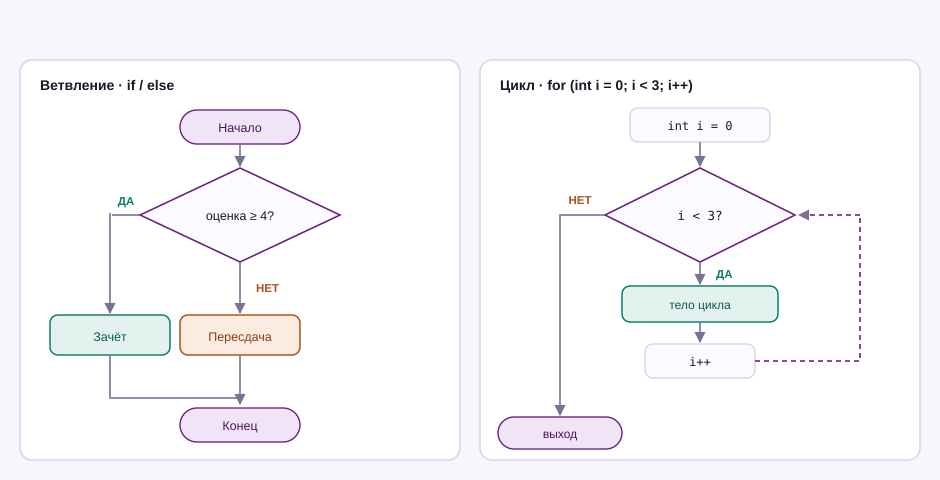

Урок 03 · 22 минуты · основы
Условия и циклы
До этого программа шла сверху вниз и всегда одинаково. Теперь она научится выбирать и повторять — это уже настоящая логика.
Сравнения и логика
Всё начинается с вопросов, у которых есть только два ответа: true или false.
| Оператор | Смысл | Пример |
|---|---|---|
== | равно | score == 100 |
!= | не равно | nick != "sneg" |
>, < | больше, меньше | age > 18 |
>=, <= | больше или равно | score >= 60 |
&& | и — нужно, чтобы выполнялось оба | a > 0 && b > 0 |
|| | или — достаточно одного | isStudent || isPensioner |
! | не — инвертирует | !isOnline |
= — это присваивание, двойное == — сравнение. if (x = 5) не спросит «равно ли пять», а попробует записать пятёрку в x.
Ветвление: if / else
Программа идёт по проверкам сверху вниз и выполняет первый подходящий блок. Остальные даже не рассматриваются.
int score = 78;
if (score >= 90)
{
Console.WriteLine("Отлично");
}
else if (score >= 70)
{
Console.WriteLine("Хорошо");
}
else if (score >= 50)
{
Console.WriteLine("Тройка");
}
else
{
Console.WriteLine("Пересдача");
}
// Выведет: Хорошо
Условие в одну строку
Тернарный оператор пригодится, когда выбор простой: значение зависит от условия.
int score = 87;
string verdict = score >= 60 ? "зачёт" : "пересдача";
Console.WriteLine(verdict); // зачёт
// читается как: условие ? если_да : если_нетswitch — когда вариантов много
Длинная цепочка if / else if читается плохо. Если сравниваешь с конкретными значениями, берётся switch.
string day = "суббота";
switch (day)
{
case "суббота":
case "воскресенье":
Console.WriteLine("Выходной");
break;
default:
Console.WriteLine("Учёба");
break;
}Современная запись — switch-выражение. Оно возвращает значение, поэтому его можно присвоить переменной:
int score = 87;
string grade = score switch
{
>= 90 => "5",
>= 75 => "4",
>= 60 => "3",
_ => "2" // _ значит «всё остальное»
};
Console.WriteLine(grade); // 4Циклы
Четыре штуки закрывают практически всё. Выбирай по смыслу: «повтори N раз», «пока не закончится» или «пройдись по коллекции».
for — когда известно количество повторений
for (int i = 0; i < 5; i++)
{
Console.WriteLine($"Шаг {i}");
}
// 0 1 2 3 4 — тело выполнится пять разwhile — пока условие истинно
int balance = 100;
while (balance > 0)
{
balance -= 30;
Console.WriteLine($"Осталось: {balance}");
}
// 70 40 10 -20foreach — по элементам коллекции
string[] players = { "sneg", "mark", "dasha" };
foreach (string p in players)
{
Console.WriteLine(p);
}break и continue
for (int i = 1; i <= 10; i++)
{
if (i % 2 == 0) continue; // чётные пропускаем
if (i > 7) break; // дальше не идём
Console.WriteLine(i); // 1 3 5 7
}while условие никогда не станет ложным, программа зависнет и не отпустит консоль. Выход — Ctrl+C. Проверяй, что внутри цикла что-то меняется.
Случайные числа
Класс Random создаётся один раз, а дальше выдают сколько нужно чисел.
Random rnd = new Random();
int dice = rnd.Next(1, 7); // 1..6, верхняя граница не входит
int chance = rnd.Next(100); // 0..99
if (chance < 5)
{
Console.WriteLine("Выпал редкий скин!");
}for (int i = 0; i < 5; i++)?Выведи таблицу умножения на 7 — от 7 x 1 = 7 до 7 x 10 = 70. Ровно десять строк, каждая через цикл.
Если легко — сделай FizzBuzz: числа от 1 до 100, где вместо кратных трём печатается Fizz, вместо кратных пяти — Buzz, а вместо кратных обоим — FizzBuzz.
Показать решение
for (int i = 1; i <= 10; i++)
{
Console.WriteLine($"7 x {i} = {7 * i}");
}for (int i = 1; i <= 100; i++)
{
if (i % 15 == 0)
Console.WriteLine("FizzBuzz");
else if (i % 3 == 0)
Console.WriteLine("Fizz");
else if (i % 5 == 0)
Console.WriteLine("Buzz");
else
Console.WriteLine(i);
}Порядок проверок важен: кратность 15 проверяется первой, иначе до неё просто не дойдёт очередь.